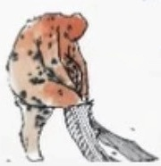
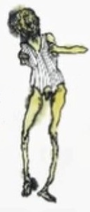
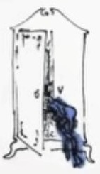

die drei letzten shows im kapitel
b3nn3t
2023–2026

live
13. juni · jugendfestival (ZAK) · Jona
26. juni · oya! openairfestival (gleis19) · Wien
08. august · winterthurer musikfestwochen · Winterthur


überspringen